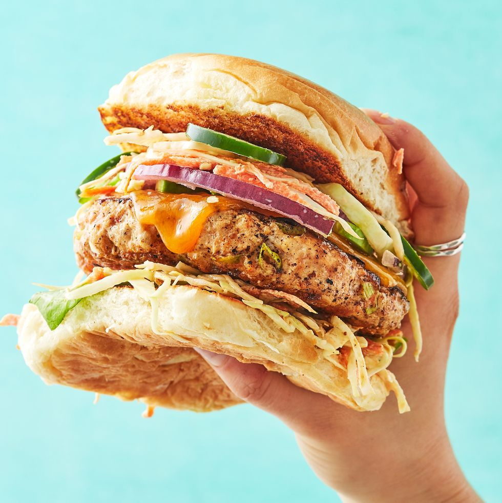

Gourmet Chicken Burger

Description
We all know that beef gets the spotlight when it comes to classic burgers,
but when it comes to alternatives, chicken burgers can get a bad rap. They
often get left in the dust by other choices like salmon, turkey, and veggies.
While they can definitely be a tad bit lean, that doesn’t mean they have to be boring!
We spiced up these chicken patties to ensure they definitely weren’t lacking in the flavor
department, before loading them up with all the must-have toppings (we’re looking at you,
coleslaw). If chicken burgers haven’t been your fave in the past, trust us—our easy, flavorful
recipe will make you a believer.
Ingredients
- 1 1/2 lb. ground chicken
- 3/4 tsp. smoked paprika
- 1 clove garlic, minced
- 3 scallions, minced
- Kosher salt
- Freshly ground black pepper
- 2 tbsp. extra-virgin olive oil
- 4 slices cheddar
- 4 leaves butterhead lettuce
- 2 c. coleslaw
- 1 avocado, thinly sliced
- 1/4 small red onion, thinly sliced
- 1 jalapeño, thinly sliced
- 4 brioche burger buns, split and lightly toasted
Steps
-
In a large bowl, combine chicken, paprika, garlic, and green onions,
and season with salt and pepper. Divide mixture into 4 patties.
-
In a large skillet over medium heat, heat oil. Add burger patties and cook,
flipping once, until golden and a thermometer inserted into the center registers 165°,
8 to 10 minutes. Top with cheddar, cover, and cook until just melted, 2 minutes.
Remove from heat and transfer patties to a plate.
-
Stack lettuce, coleslaw, chicken burgers, avocado, red onion, jalapeño,
and more coleslaw on top of bottom buns. Close sandwiches with top buns.
Back